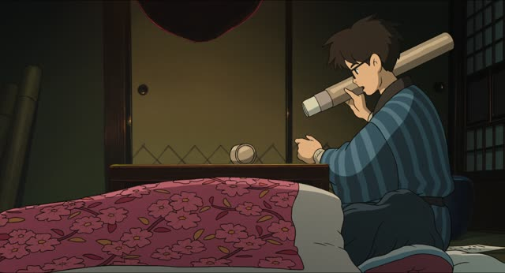

～なくてはいけない・～なきゃ
| Polite | ～なくてはいけません also ～なければなりません: more formal |
|---|---|
| Casual | ～なくちゃ・～なきゃ spoken; いけない after it often drops |
Same meaning: "have to, must". Only the politeness changes.
To say you have to do something, take the verb's ない-form, change the last い to くては, then add いけない: 行かない → 行かなくてはいけない, "I have to go". Literally: "not going won't do".
In everyday speech it gets squeezed: なくては → なくちゃ, なければ → なきゃ, and the いけない often drops: 行かなきゃ！
Examples
Leaving the office party early. Your boss asks why.
明日は6時に起きなくてはいけません。
"I have to get up at six tomorrow."
PoliteThe doctor hands over a prescription.
この薬は毎日飲まなければなりません。
"You must take this medicine every day."
なければなりません: the formal version, for rules and official talk.
PoliteYou check the time at a friend's place.
あ、もう帰らなきゃ。
"Oh, I have to go home."
CasualSunday evening, your kid is still playing.
宿題、やらなくちゃね。
"You've got to do your homework, right?"
CasualWith and without
明日は早く起きる。
"I'll get up early tomorrow." Just a plan.
明日は早く起きなきゃ。
"I have to get up early tomorrow." No choice.
Sentence mining

I am Mita, Your Housekeeper · Episode 2
近いうちに 話さなきゃいけないと思ってます
"I think I have to tell them soon."
話さない → 話さなきゃいけない. 近いうちに: "one of these days, soon".

Sailor Suit and Machine Gun · Episode 4
組長は僕が 助けなきゃいけないんです！
"I'm the one who has to save the boss!"
助けない → 助けなきゃいけない.

Source unknown No source
レインブーツ出さなきゃ。
"I need to get my rain boots out."
なきゃ alone, いけない dropped.

Border · Episode 9
絶対的な正義に ならなくてはいけない
"You have to become absolute justice."
The full form: ならない → ならなくてはいけない.

Weakest Beast · Episode 8
社員 養わなきゃいけない
"I have staff to feed."
養う: to support, feed (a family, staff).

Overprotected Kahoko · Episode 1
いずれ 私が 介護しなきゃいけないんだし
"Sooner or later I'll have to look after them."
介護する: to care for (the old or sick). いずれ: "sooner or later".

The Wind Rises
明日までに決めなきゃいけないんだ
"I have to decide by tomorrow."
決めない → 決めなきゃいけない. までに: "by (a deadline)".
I'm Taking the Day Off · Episode 9
どうして忘れなきゃいけないの？
"Why do I have to forget?"
忘れない → 忘れなきゃいけない.